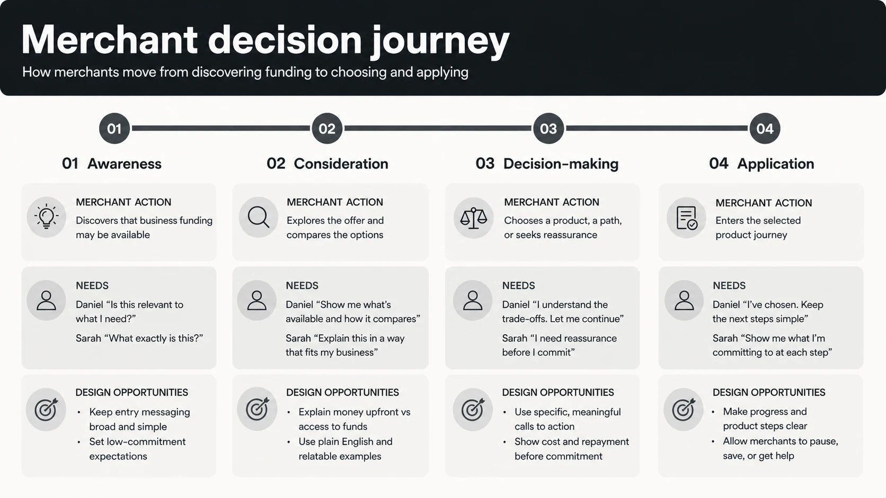
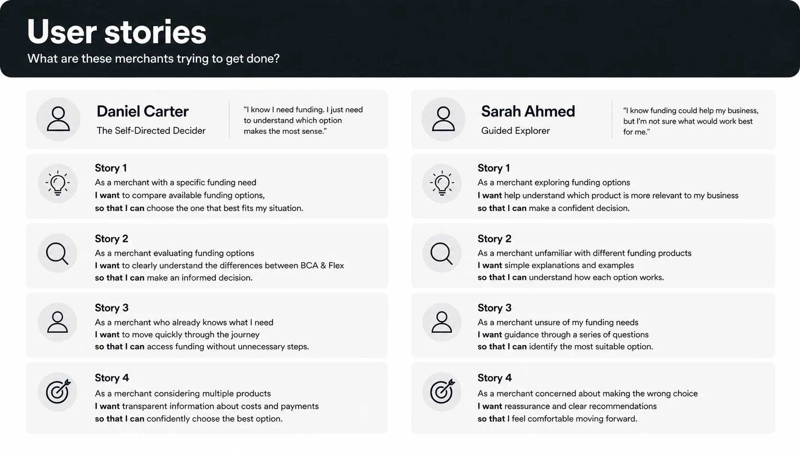
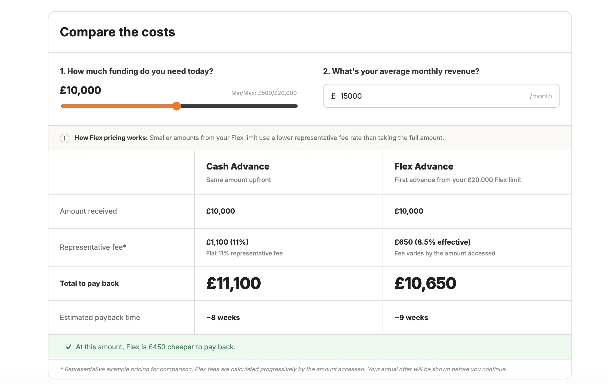
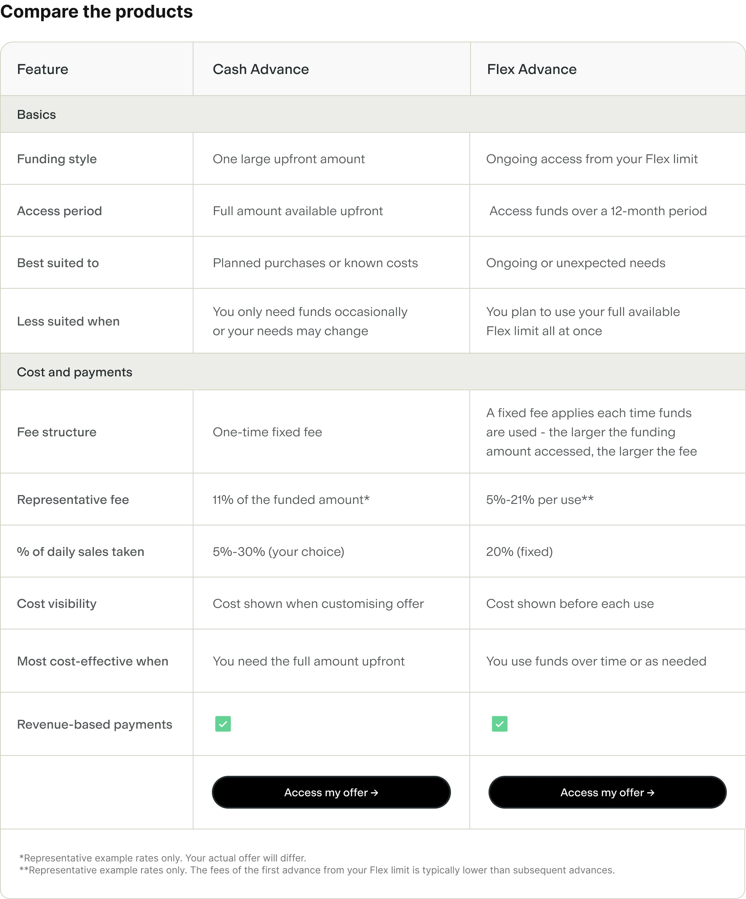

Helping merchants choose the right funding product
Role
Product Designer: Design Strategy, UX/UI Design
Team
PMCommercialSalesUser Research
Scope
Product strategy, user research, journey mapping, prototyping and usability testing
Timeline
Q1–Q3 2026
The problem
As Liberis moved towards offering merchants more than one funding product, the job was no longer simply helping someone complete an application. Merchants needed to understand and compare their options without feeling overwhelmed or steered towards the largest amount.
What made this hard
Merchants approached funding differently: some wanted clear facts and control, while others needed guidance and reassurance. The journey had to support both while making two different products easy to compare, without pushing merchants towards a particular product or the largest amount.

The journey map connects merchant actions and needs to the design opportunities at each stage.
The solution and impact
I created one flexible journey: merchants could compare products directly or use an optional “Help me choose” quiz. Amounts and representative costs appeared earlier, while progressive explanations and a calculator made unfamiliar mechanics easier to understand.
Across two rounds, I tested the concepts and revised journey with ten merchants. In the second round, the earlier issues did not recur, and all five participants responded positively. The work gave the team a tested direction for presenting multiple funding options, combining direct comparison with optional guidance.
What I learned
I learned that transparency depends on showing the right information at the right point. Merchants needed clear costs, payment details and product differences to make a meaningful comparison, with further explanations available when they needed them.
I also learned not to assume everyone wanted the same level of support. Making the quiz optional let merchants choose between guided exploration and direct comparison, so those ready to decide could move forward without unnecessary steps.
Designing and validating a multi-product journey around the different ways merchants understand, compare and choose funding.
Role
Product Designer: Design Strategy, UX/UI Design
Team
PMCommercialSalesUser Research
Scope
Product strategy, user research, journey mapping, prototyping and usability testing
Timeline
Q1–Q3 2026
Overview
As Liberis moved towards offering merchants more than one funding product, the job was no longer just helping someone complete an application. It was helping them choose without steering them towards the largest amount available.
The experience compared two products. Cash Advance provided one amount upfront, while Flex Advance provided a reusable limit that merchants could access over a 12-month period. It was designed to be embedded within Liberis partner platforms, so the concepts use Shopwell, a fictional brand representing one of those partners.
How might we help merchants understand, compare and confidently choose the right funding product while keeping them in control of the decision?
I led the design end to end: framing the customer decision, synthesising research into behavioural personas, mapping the journey, prototyping competing directions and validating the proposed experience.
WHY IT WAS HARD
The journey needed to help merchants compare two products with different funding and payment structures. Guidance had to explain why an option was suggested, while giving merchants enough information to choose without overwhelming them.
The process
I moved from understanding how merchants make funding decisions to mapping the journey, testing different levels of guidance and refining one flexible experience.
Step #1: Understanding the decision and mapping user needs
I started by combining findings from interviews with our sales team and evidence from how merchants moved through the existing funding journey. As I synthesised the findings, two recurring approaches to choosing a product emerged. Some merchants wanted clear facts and the freedom to decide independently. Others needed more guidance and reassurance as they compared their options.
I used those patterns to create two behavioural personas. I defined them by how merchants approached the decision because this had the clearest effect on what they needed from the experience. Their eventual product choice was the outcome the journey needed to support, not a useful starting point for deciding how much information or guidance to provide. The personas showed that the experience needed enough clarity for someone ready to choose independently, with additional explanation available for someone who needed help building confidence.
Daniel Carter
The Self-Directed Decider
“I know I need funding. I just need to understand which option makes the most sense.”
Goals
Access funding quickly
Compare options confidently
Understand cost and repayment
Needs
Clear product comparisons
No unnecessary questions
Confidence he is choosing correctly
Behaviours
Researches before committing
Prefers self-service
Values transparency and speed
Decision style
Give me the information I need and let me decide.
Sarah Ahmed
The Guided Explorer
“I know funding could help my business, but I’m not sure what would work best for me.”
Goals
Grow her business confidently
Invest at the right time
Avoid unnecessary financial risk
Needs
Simple explanations and guidance
Help comparing products
Reassurance before committing
Behaviours
Explores before deciding
Responds to guided experiences
Learns through examples
Decision style
Help me understand what’s right for my business.
The personas and their quotes are illustrative syntheses, not participant quotations. They made the core design tension tangible: Daniel valued independence and speed, while Sarah valued explanation and reassurance.
KEY INSIGHT
The same information did not serve every merchant equally. The opportunity was one experience that could support both independent comparison and optional guidance.
I mapped the experience before designing detailed screens so the team could agree what merchants needed at each stage: when to introduce both products, where comparison was needed, when guidance would be useful and what information would give someone enough confidence to continue into an application. This meant we could agree how the decision should work before discussing the layout and content of individual screens.
The map makes the key comparison, reassurance and commitment moments visible across the experience.
I translated the mapped moments of uncertainty into user stories covering cost, flexibility, suitability and next steps. These gave me criteria for comparing concepts: could merchants understand their options and still feel in control?

The user stories turned moments of uncertainty into needs the concepts could be evaluated against.
Step #2: Comparing two approaches to guidance
I used those needs to explore two deliberately different approaches. One gave merchants more space to understand the products and make the decision independently. The other introduced more active guidance to help merchants work out which option might suit their situation.
I compared two overall approaches, using observations and feedback to understand which parts merchants valued. The concepts differed in guidance, financial information, examples and imagery, so a preference for one would not isolate the effect of the quiz alone.
I defined the quiz questions and recommendation rules using findings from the initial sales interviews. Recommendations considered when merchants wanted funds, the seasonality of their business, what they planned to use funding for, whether they knew how much they needed and how often they expected to use funding. The quiz translated those needs into a suggested product, while direct comparison remained available for merchants who preferred to choose independently.
For example, answers indicating a planned purchase and a clear amount contributed towards a Cash Advance suggestion, while ongoing needs and flexibility over when to use funds contributed towards Flex Advance. The prototype combined answers across the quiz to suggest a product, rather than deciding from a single response.
Interactive prototype: click the mockup to try the quiz-led journey and see how it guides merchants towards a recommended funding option.
Step #3: Testing the concepts with merchants
I tested both prototypes with five recruited merchants. Three had previously taken a business funding product. Two had not taken funding before but had considered it. Each merchant explored both concepts, allowing me to observe their understanding and hear what helped them feel confident about choosing.
All five participants preferred Concept B. They valued seeing funding amounts early, found the comparison and examples useful, and felt its merchant photography was friendlier than the icons used in Concept A. All five also saw value in the optional quiz and said its suggested product reflected the needs they had shared.
This gave us confidence in the overall structure of Concept B, so I kept it as the foundation for the next iteration.
The question then changed. Rather than asking which overall experience was strongest, I needed to understand whether that experience gave merchants enough information and confidence to make a real funding decision.
Testing showed where the direction still needed work
The most important gap was cost. All five merchants wanted to estimate the fees, overall amount they might pay back and likely payback period for both products so they could compare the options on the same basis. Without that information, they did not feel confident moving forward. This showed that representative cost information needed to appear earlier in the journey, before a personalised offer was available.
Testing also showed that the reusable limit, repeated access and 12-month access period of Flex Advance needed clearer explanation. Some quiz questions were too open-ended, and extra guidance could not come at the expense of merchants who were ready to go directly to their offer.
The challenge shifted from defining the overall structure to making that structure genuinely useful for a financial decision.
Feedback → Design response
FeedbackDesign response
01
All five preferred Concept B
Kept Concept B as the foundation
02
All five needed comparable cost estimates
Surfaced representative fees, overall payback and payback time sooner
03
Flex Advance mechanics were unclear
Explained the reusable limit, repeated access and 12-month access period
04
Quiz questions felt too broad
Added clearer options and specific timeframes
05
Not everyone wanted more guidance
Kept direct offer access alongside the optional quiz
06
Merchants wanted concrete examples
Added case studies showing real funding use cases
07
Business imagery felt friendlier than icons
Retained the preferred merchant photography
08
Static cost examples were limited
Built an interactive cost calculator
The breadth of the response covered structure, content, interaction design, product explanation and visual relevance.
The hardest design problem
Step #4: Making representative costs clear and explorable
One piece of feedback became significantly harder to solve than the others: bringing cost into the journey earlier.
Merchants needed to understand what each option might cost before they could make a meaningful choice, but we could not yet surface their actual merchant-specific fees. That meant working with representative figures.
Those figures needed to be useful enough to support comparison without looking like an actual offer. The problem was made harder because Cash Advance and Flex Advance did not express cost in exactly the same way. Forcing both products into identical financial language risked making the comparison simpler visually but less accurate.
I was also working within constrained financial terminology, so the experience had to explain complex mechanics in plain language without relying on familiar lending terms such as drawdown, loan or repayments, which were not approved for the products.
THE TRADE-OFF
More information could improve transparency, but showing every mechanic at once would increase cognitive load. The aim was not to hide complexity. It was to introduce it at the point it became useful.
I designed an interactive calculator so merchants could explore how funding amount and revenue affected indicative costs, rather than relying on a fixed example. The figures remained clearly representative, rather than a personalised offer.
I worked with the Commercial team on the calculator logic, then used Claude Code to help build the interactive prototypes and implement that logic. Merchants could change inputs and see indicative costs respond, rather than rely on fixed examples.
Merchants could use the same funding amount and expected revenue to compare the estimated fees and payback for both products, without suggesting that the products worked in exactly the same way.

The calculator frames the result as representative example pricing rather than an offer.
The calculator and comparison table answered different questions. The calculator helped merchants compare indicative cost and consider which option would be more affordable to pay back based on the amount they wanted and their business revenue. The comparison table helped them understand the fundamental differences between the products and which features better suited their needs.
The table already existed in Concept B. In the next iteration, I refined its content and clarity by bringing representative fees, payment mechanics, flexibility and suitable use cases closer to the decision.

Scroll inside the browser to explore the full comparisonThe table brings product structure, suitable uses, representative fees and payment mechanics into one comparison.
Step #5: Refining the complete experience
The cost work was the deepest iteration, but the updated prototype also responded to the wider feedback without forcing every merchant through more guidance.
Flex Advance
Clearer explanation of the reusable limit, repeated access and 12-month access period.
Guidance
More specific quiz questions, with direct offer access still available.
Trust
Retained the merchant photography participants preferred.
Relevance
Merchant examples showed how funding could support real business needs.
I brought these changes into the revised prototype, retaining the structure that had tested strongest and preserving direct access for merchants ready to choose.
The evolved direction retains Concept B’s decision architecture and refines the areas that testing showed still needed work.
Step #6: Validating the revised direction
I tested the updated prototype with five additional merchants to see whether the changes had resolved the problems identified in the first round. The earlier issues around cost transparency, product understanding and quiz clarity did not recur, and all five merchants responded positively to the revised journey.
This second round gave the team evidence that the combined experience could support merchants who wanted to compare independently as well as those who wanted more guidance.
Outcome
The work gave the team a tested direction for introducing multiple funding products: one experience combining direct comparison with optional guidance. The revised prototype provided a concrete basis for deciding how to present costs, explain product differences and support merchants with different decision-making preferences.
The work also established principles for future funding options: show amounts and representative costs early, explain unfamiliar mechanics progressively and preserve a direct route for merchants ready to choose. Sales interview findings informed the recommendation rules, while collaboration with Commercial informed the calculator logic.
RESULT
A tested multi-product direction and a reusable decision model for helping merchants compare future funding options with clarity, guidance and control.
What I learned
Simply showing merchants more than one available product was not enough. Choosing funding is a high-stakes decision, so merchants needed transparency about cost, payments, flexibility and the trade-offs between their options.
Transparency did not mean showing everything at once. Progressive disclosure made the key differences clear upfront, while allowing merchants to explore more detail or guidance when they needed it. This helped the same journey support different decision-making styles while preserving their control over the final choice.
I also learned not to assume that every merchant needed the same level of support. Requiring everyone to complete a product quiz would have slowed down merchants who were ready to compare independently, while removing guidance entirely would have left others without enough confidence to choose. Making the quiz optional allowed each merchant to decide how much support they needed.